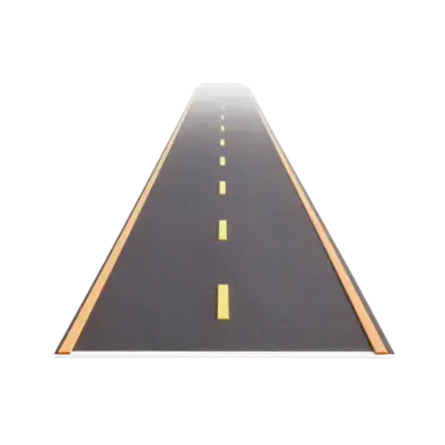

Dasar Hukum &
Pengertian Lalu Lintas
1. UU No. 22 Tahun 2009
"Lalu Lintas dan Angkutan Jalan adalah satu kesatuan sistem yang terdiri atas Lalu Lintas, Angkutan Jalan, Jaringan Lalu Lintas dan Angkutan Jalan, Prasarana Lalu Lintas dan Angkutan Jalan, Kendaraan, Pengemudi, Pengguna Jalan, serta pengelolaannya."
Pengertian & Fungsi Lalu Lintas
Gerak kendaraan & orang di jalan. Berfungsi mengatur pergerakan aman, tertib, lancar, dan efisien.
Unsur Lalu Lintas
Terdiri dari Manusia, Kendaraan, serta Jalan/Infrastruktur.

4. Dasar Hukum dan Peraturan (PP)
Regulasi turunan resmi penunjang Undang-Undang Lalu Lintas.
Manajemen dan rekayasa lalu lintas, analisis dampak lalu lintas.
Forum Lalu Lintas dan Angkutan Jalan.
Kendaraan dan persyaratan teknis kelaikan jalan.
Jaringan lalu lintas dan angkutan jalan, termasuk batasan kecepatan.
Angkutan jalan secara komprehensif.
6 & 7. Peraturan Dasar & Contoh Berkendara
Ketentuan wajib berdasarkan UU No. 22 Tahun 2009:
Wajib memiliki SIM sesuai kendaraan (Usia min. SIM C adalah 17 tahun) dan jalan wajib memenuhi fungsi laik secara teknis & administratif.
Wajib mengutamakan keselamatan pejalan kaki/pesepeda serta mematuhi rambu, marka, lampu isyarat, hingga batas kecepatan.
Aturan Batas Kecepatan (PP No. 79 Tahun 2013):
9. Rambu dan Marka Jalan
Berdasarkan Permenhub No. 13 Tahun 2014 & No. 34 Tahun 2014. Klik salah satu kartu rambu atau marka di bawah untuk melihat penjelasan detail beserta gambar/logo resminya!

Peringatan
Detail ▾
Larangan
Detail ▾
Perintah
Detail ▾
Petunjuk
Detail ▾
Garis Putus
Detail ▾Garis Utuh
Detail ▾10. Etika Berkendara
Prinsip dasar kesopanan dan keselamatan di jalan raya:
Perilaku yang Baik
- • Menggunakan helm SNI & membawa SIM/STNK lengkap
- • Menyalakan lampu sein sebelum berbelok
- • Berhenti saat lampu merah & beri jalan ambulans
- • Menjaga jarak aman & batas kecepatan
Perilaku Tidak Beretika
- • Menerobos lampu merah & melawan arus
- • Menggunakan ponsel saat mengemudi
- • Berkendara ugal-ugalan atau di bawah pengaruh alkohol
- • Tidak memakai helm atau berboncengan melebihi kapasitas
11 & 12. Safety Riding & Perlengkapan Berkendara
Standar perlindungan fisik pengendara roda dua

Helm SNI
Gunakan helm berstandar SNI, pastikan tali terkunci dengan benar untuk melindungi kepala dari benturan.

Jaket
Melindungi tubuh dari angin, panas, dan hujan, serta mengurangi risiko luka saat terjatuh.

Sarung Tangan
Memberikan cengkeraman lebih baik pada setang serta melindungi tangan dari gesekan.

Celana Panjang
Melindungi kaki dari panas mesin dan goresan. Hindari celana pendek saat berkendara.

Sepatu Tertutup
Gunakan sepatu yang menutupi seluruh kaki untuk menjaga keseimbangan dan keselamatan.

Jas Hujan (Setelan)
Gunakan jas hujan model setelan (bukan ponco) agar tidak tersangkut roda kendaraan.
14. Pengguna Jalan yang Memiliki Prioritas
Kendaraan yang memperoleh hak utama untuk didahulukan di jalan raya secara berurutan:
- Pemadam kebakaran yang sedang bertugas
- Ambulans yang mengangkut orang sakit
- Kendaraan pertolongan kecelakaan lalu lintas
- Kendaraan pimpinan lembaga negara & tamu negara asing
- Iring-iringan pengantar jenazah & konvoi resmi
13. Video Panduan Simulasi
Tonton video panduan keselamatan berkendara secara visual untuk memahami penerapan aturan.
Tonton Video Simulasi